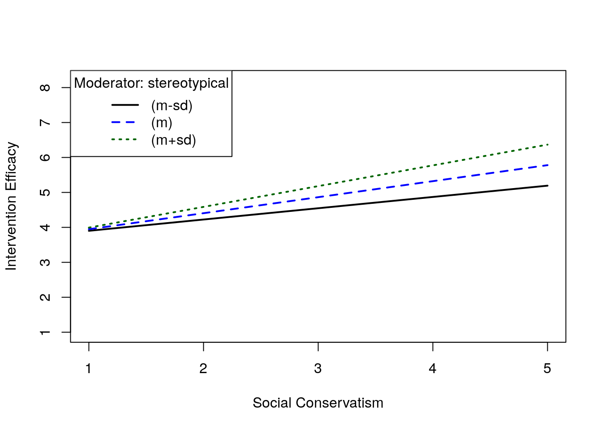

5 Module 5: Regression and GLM procedures
To begin, open the glmModels.R file
After having assessed diagnostics, attnention can be turned to the regression analyses proper. All the analyses in this module will be based on the binge.clean data frame that was created at the end of Part 1b. It is the BDRV data without the observations at row numbers 777 (i.e., ID = 358) and 778 (i.e., ID = 212). The module will cover:
- multiple regression
- use of binary and other categorical predictors
- hierarchical regression
- moderated multiple regression
- simple mediation
- some ANOVA
- One-way B S/s
- Factorial B S/s
- Repeated measures and mixed factorials (limited)
- via
afex()package
- via
The code in glmModels.R will produce an lm() object called binge.clean.
binge <- data.frame(read.spss(here::here("data", "BDRVdataR.sav")))
binge.clean <- binge[-c(777,778),]
regint.clean <- lm(intervention~age + sex + hospitality + conservative, data=binge.clean)And the regression output is below:
##
## Call:
## lm(formula = intervention ~ age + sex + hospitality + conservative,
## data = binge.clean)
##
## Residuals:
## Min 1Q Median 3Q Max
## -3.3726 -0.6437 0.0338 0.7252 2.7004
##
## Coefficients:
## Estimate Std. Error t value Pr(>|t|)
## (Intercept) 2.369220 0.160251 14.784 < 2e-16 ***
## age 0.029882 0.002814 10.620 < 2e-16 ***
## sexfemale 0.231851 0.075460 3.072 0.0022 **
## hospitalityyes -0.093814 0.117216 -0.800 0.4238
## conservative 0.452548 0.055064 8.219 8.69e-16 ***
## ---
## Signif. codes: 0 '***' 0.001 '**' 0.01 '*' 0.05 '.' 0.1 ' ' 1
##
## Residual standard error: 1.041 on 771 degrees of freedom
## Multiple R-squared: 0.2238, Adjusted R-squared: 0.2198
## F-statistic: 55.59 on 4 and 771 DF, p-value: < 2.2e-16## 2.5 % 97.5 %
## (Intercept) 2.05464114 2.68379941
## age 0.02435821 0.03540519
## sexfemale 0.08371918 0.37998270
## hospitalityyes -0.32391426 0.13628592
## conservative 0.34445464 0.56064047This output corresponds to most of the output from GP software like SPSS. To reiterate some of the above:
Estimate= b-weights (i.e., unstandardised regression weights)Std. Error= standard error (i.e., se) of b-weightt value= self explanatoryPr(>|t|)= p values (e.g., Sig.), note exponential notation
Of more interest is the way that R has set up the regression model in lm(). In particular, note that the Factor variables, sex and hospitality have been automatically turned into dummies. Because these Factors have underlying numeric values (as they came from SPSS) the lowest numeric value is the reference category. Otherwise, for text only Factors, the category that is listed first alphabetically is the reference category (n.b., in either case, this can easily be changed). As well, lm() output shows the actual tested catgory (e.g., sexfemale) and so the b-weight shows the difference between females compared to males as the reference category.
The creation of appropriate dummies will also occur for Factors with 3 or more levels. For example, the BDRV data contains a variable consisting of three groups on the basis of how frequently the participants reported engaging in binge behaviour (bingegrp: 1 = never; 2 = less than weekly; 3 = weekly or more). To briefly demonstrate how this Factor variable is treated in R, note the code below and the corresponding output.
##
## Call:
## lm(formula = intervention ~ bingegrp, data = binge.clean)
##
## Residuals:
## Min 1Q Median 3Q Max
## -3.14752 -0.73977 0.05248 0.85248 2.85248
##
## Coefficients:
## Estimate Std. Error t value Pr(>|t|)
## (Intercept) 4.93977 0.07052 70.053 < 2e-16 ***
## bingegrplow, binge less than weekly -0.63551 0.09164 -6.935 8.58e-12 ***
## bingegrphigh, binge weekly or more -0.79225 0.11877 -6.671 4.86e-11 ***
## ---
## Signif. codes: 0 '***' 0.001 '**' 0.01 '*' 0.05 '.' 0.1 ' ' 1
##
## Residual standard error: 1.135 on 773 degrees of freedom
## Multiple R-squared: 0.07602, Adjusted R-squared: 0.07363
## F-statistic: 31.8 on 2 and 773 DF, p-value: 5.36e-14- Note that the Factor variable has been automatically converted into a pair of dummies for the purpose of the regression.
- The first category is automatically the reference category but this can be changed (either for a single regression or for all). However, if you take this into consideration when setting up response options for your data gathering, it can help your workflow considerably.
- e.g., for the dummies in previous models, responses were no and yes. No comes alphabetically before yes and so no is the reference category.
- The special way in which Factors and numerics are dealt with in functions like lm() is one of the things that makes R so useful. Later, when looking at moderation and more complex models this approach will really bear fruit.
Transformations It is not necessary to compute transformations separately. In R, they are inserted directly into the formula in lm(). For example, the following computes a natural log transform of age in the regression.
##
## Call:
## lm(formula = intervention ~ log(age) + sex + hospitality + conservative,
## data = binge.clean)
##
## Residuals:
## Min 1Q Median 3Q Max
## -3.3997 -0.6529 0.0488 0.7205 2.8481
##
## Coefficients:
## Estimate Std. Error t value Pr(>|t|)
## (Intercept) -0.22688 0.36100 -0.628 0.52988
## log(age) 1.04371 0.10205 10.227 < 2e-16 ***
## sexfemale 0.24199 0.07586 3.190 0.00148 **
## hospitalityyes -0.09577 0.11787 -0.813 0.41673
## conservative 0.45914 0.05527 8.307 4.4e-16 ***
## ---
## Signif. codes: 0 '***' 0.001 '**' 0.01 '*' 0.05 '.' 0.1 ' ' 1
##
## Residual standard error: 1.046 on 771 degrees of freedom
## Multiple R-squared: 0.2166, Adjusted R-squared: 0.2125
## F-statistic: 53.29 on 4 and 771 DF, p-value: < 2.2e-16For a square root transformation, the code would be:
lm(intervention~sqrt(age) + sex + hospitality + conservative, data=binge.clean)
and so forth.
However, it is almost never a good idea to transform variables…
5.1 Hierarchical regression
Running a hierarchical regression is straightforward in R. as the two blocks are assigned to their own objects and then the objects are compared with the anova() function.
# object labelled meaningfully but arbitrarily
block1 <- lm(intervention~age + sex + hospitality + conservative, data=binge.clean)
#summary(block1) *output suppressed
block2 <- lm(intervention~age + sex + hospitality + conservative + bingegrp, data=binge.clean)
#summary(block2) *output suppressed
# this is the line to obtain F for change
anova(block1, block2)## Analysis of Variance Table
##
## Model 1: intervention ~ age + sex + hospitality + conservative
## Model 2: intervention ~ age + sex + hospitality + conservative + bingegrp
## Res.Df RSS Df Sum of Sq F Pr(>F)
## 1 771 836.24
## 2 769 816.63 2 19.611 9.2338 0.0001089 ***
## ---
## Signif. codes: 0 '***' 0.001 '**' 0.01 '*' 0.05 '.' 0.1 ' ' 1- each block is listed as a separate regression
- the order in which the output objects are listed doesn’t matter as the anova() function will figure out the nesting based on degrees of freedom
- need to watch for differences across the regression owing to missing data
- create marker for sample of people who have no missing data across entire list of predictors
- this approach can be extended to multiple pairs if there are more than 2 hierarchical blocks
5.2 Moderated multiple regression
To express a moderated regression GLM in lm() is almost trivially easy. The product term is inserted directly into the formula passed to lm() as below.
##
## Call:
## lm(formula = intervention ~ sex + conservative * stereotypical,
## data = binge.clean)
##
## Residuals:
## Min 1Q Median 3Q Max
## -3.3783 -0.7044 0.0246 0.6937 2.9544
##
## Coefficients:
## Estimate Std. Error t value Pr(>|t|)
## (Intercept) 3.67836 0.65740 5.595 3.06e-08 ***
## sexfemale 0.24205 0.07893 3.067 0.00224 **
## conservative -0.19099 0.25795 -0.740 0.45928
## stereotypical -0.08826 0.13178 -0.670 0.50320
## conservative:stereotypical 0.13278 0.05063 2.622 0.00890 **
## ---
## Signif. codes: 0 '***' 0.001 '**' 0.01 '*' 0.05 '.' 0.1 ' ' 1
##
## Residual standard error: 1.088 on 771 degrees of freedom
## Multiple R-squared: 0.1526, Adjusted R-squared: 0.1482
## F-statistic: 34.72 on 4 and 771 DF, p-value: < 2.2e-16- the * operator replaces the + in these models to indicate the product term
- lm() automatically inserts the effects as two separate predicors (i.e., the marginals) + the product (i.e., the interaction), as appropriate
- use
conservative + stereotypical + conservative:stereotypicalformat for explicit coding of marginals and interaction, e.g., more complex models with multiple interactions with shared marginals- e.g.,
conservative + stereotypical + age + conservative:stereotypical + conservative:age
- e.g.,
- scales up to three-way effects (e.g.,
conservative*stereotypical*age) - automatically deals with categorical IVs or moderators (think products with dummy coding)
- below, factorial designs in ANOVA are dealt with in similar fashion
- the model can also include separate controls besides the IV and moderator if desired, as usual
- if a more detailed sequence of models was required around the moderation, hierarchical models could also be done as above, e.g.,
b1 <- lm(intervention~age + hospitality, data=binge.clean)b2 <- lm(intervention~age + hospitality + sex + conservative*stereotypical, data=binge.clean)anova(b1, b2)
Following up the initial test of moderation is facilitated by a package called rockchalk. This is a more general regression/GLM package that contains very useful functions for probing moderation. Rockchalk has extensive help in a freely available monograph.
library(rockchalk)

## Values of stereotypical OUTSIDE this interval:
## lo hi
## -9.197273 3.084799
## cause the slope of (b1 + b2*stereotypical)conservative to be statistically significant- plotSlopes() is a function that does plotting of conditional effects
- the code snippet above deliberately includes the key parameters required
- numerics treated as continuous and Factors treated as categorical moderators and dealt with automatically.
- testps() is used to actually test conditional effects and does automatic Johnson-Neyman-type analysis on conditional slopes
5.3 Mediation
The pattern for running mediation analysis in R will bear evident similarities to the general approach that has been building where more complex analyses are set up with multiple simple objects (e.g., lm() fit objects) are combined by a target function in the package. The mediation package provides functions to test a large range of mediation models, including those with discrete mediators and outcomes (e.g., generalized models used for the discrete outcome/mediator variable and OLS regression for the continuous ones).
To illustrate mediation, an analysis is run below in which the effect of age on beliefs in the efficacy of BDRV interventions is mediated by social conservatism. Note the this data was not set up to test this research question but rather it is presented as a somewhat feasible relationship for an example. There could well be hidden confounds in the data but that is beside the point. As well, sex is included to show how controls are easily incorporated into the models. The code is below:
## Loading required package: MASS##
## Attaching package: 'MASS'## The following object is masked from 'package:rockchalk':
##
## mvrnorm## Loading required package: Matrix## Loading required package: mvtnorm## Loading required package: sandwich## mediation: Causal Mediation Analysis
## Version: 4.5.0med.fit <- lm(conservative~age + sex, data= binge.clean)
dv.fit <- lm(intervention~conservative + age + sex, data= binge.clean)
med.out <- mediate(med.fit, dv.fit, treat = "age", mediator = "conservative", robustSE = TRUE, sims = 1000)
summary(med.out)##
## Causal Mediation Analysis
##
## Quasi-Bayesian Confidence Intervals
##
## Estimate 95% CI Lower 95% CI Upper p-value
## ACME 0.00272 0.00102 0.00 0.002 **
## ADE 0.03020 0.02485 0.04 <2e-16 ***
## Total Effect 0.03292 0.02739 0.04 <2e-16 ***
## Prop. Mediated 0.08025 0.03093 0.14 0.002 **
## ---
## Signif. codes: 0 '***' 0.001 '**' 0.01 '*' 0.05 '.' 0.1 ' ' 1
##
## Sample Size Used: 776
##
##
## Simulations: 1000- med.fit is clearly an lm() object like any other that happens to include the statistical model for the mediator. This would provide the parameter for the a path in Baron and Kenny notation.
- dv.fit is an lm() object that contains the full model (i.e., mediator and putative IV, with control) for the dependent variable. This would provide the parameters for the b and c’ paths, respectively.
- if desired, either of these objects could be inspected with the appropriate summary() lines in the code
sims = 1000sets the number of repetitions to 1000 for MC or bootstrapping. This would be higher for real analyses- the default is a bayesian approach but inserting the parameter
boot = TRUEin the mediate() function and removingrobustSE = TRUEwill provide the nonparametric bootstrapping with which researchers will be familiar - ACME stands for Average Causal Mediation Effect and this is the estimate of the indirect effect (i.e., the key statistical parameter for mediation)
- ADE stands for Average Direct Effect and this is the effect of the IV on the DV, ignoring the Mediator
- note that these will not necessarily be exactly equal to the paths from the OLS regressions in the lm() objects owing to the effects of simulations (i.e., bootstrapping or MC, according to the number of repetitions)
- The Total Effect is the sum of the indirect and direct effects, as usual.
5.4 ANOVA
Full disclosure: ANOVA is a point of controversy in R.
5.4.1 Issue no.1
Simply put, there are various ways to calculate Sums of Squares (SS) in ANOVA when there are multiple effects. These are generally described as Type I, II, and III SS, respectively. Software like SAS and SPSS default to Type III SS for unbalanced designs. (In case you were asking, Type I = sequential SS, like a hierarchical regression; Type II = marginal SS where effects are evaluated with all other effects partialled except higher order ones that include them; Type III = effects are evaluated with all other effects partialled, including higher order ones that include the target effects.) Stata and R, depending on the package, go to Type II (or Type I in some cases). The statistical purist’s choice is Type II. The people who maintain R are generally purists (and I am basically on their side, he said, surprising no one). However, ultimately, in balanced data, the answers should be the same; it’s just that data in factorial designs are so rarely balanced in practice. Also, some statistical authorities argue in favour of Type III SS, but it is fair to say most argue against them. In practice, if you use the base R aov() function, the order in which you list effects in the formula (i.e., DV ~ Effect1*Effect2 + Covariate is different to DV ~ Covariate + Effect1*Effect2 and Effect1*Effect2 is different to Effect2*Effect1). This will be different to the Anova() function from car which uses Type II SS. After having mastered these functions users will probably want to make use of specialised ANOVA packages such as ez and afex.
5.4.2 Issue no. 2
Repeated measures designs are a little tricky to set up and for mixed designs (i.e., between-within designs, not mixed effects models per se) you need to be pretty clear about the appropriate effects to use as error terms. Probably the best thing ultimately is to learn to use the mixed effects modelling package lme4 and the lmer() function. Otherwise, the specialised ANOVA packages such as ez and afex are of great use here as well.
What does this mean in practice? A factorial or repeated measures ANOVA run in R most likely won’t give the exact same numbers as that run in SPSS or SAS but it should match Stata. If the effects are greatly different (vs just a slight difference in the value of the MS or F ratios), this is something that should be investigated thoroughly, in case there are influential data points combined with very small cells or similar. Ideally, by the time the ANOVA is run, anything potentially problematic in the data should have come to light.
Below, you will find the code for the “standard” designs. Most of these are as simple as you would expect. The spoiler is that for many, you can: a) use the aov() function to estimate the ANOVA directly, accepting the Type I, or sequential SS; or b) simply specify the design in lm() as usual with R taking care of the Factors versus the numerics and then feed that output into anova() or car::Anova() to obtain appropriate SS. If that’s the sort of thing you will need to do, one of the above will be an end to it. There are packages that make that job a little easier for those who do a ANOVAs regularly. There are packages for followups that will adjust familywise error and the usual stuff.There are also packages that will provide Type III SS, just like the big players do (dubiously!).
A brief summary of packages
- base R
- aov()
- takes anova formula (specified as for lm()) as direct input
- with summary() obtain a quick ANOVA table
- uses Type I (i.e., sequential/hierarchical) SS and this may not exactly match a precise RQ
- order of specification of effects in formula matters
- anova()
- takes an lm() object as input
- Type I SS as for aov()
- cannot specify formula directly as for aov()
- useful to compare nested model objects etc
- aov()
car- Anova()
- uses Type II (i.e., marginal) SS and this generally provide defensible inference but watch for missing data
ez- ezANOVA()
- various functions; depends on
car - specially created for factorials, between and within
- Type II SS
afex- various functions; depends on
car - Type III SS
- various functions; depends on
emmeans- provides covariate-adjusted means and predicted means in general, like the /EMMEANS subcommand in SPSS GLM (and SAS)
- similar feel to
marginspost-estimation command in Stata - does simple main effects (and conditional or simple slopes)
- runs contrasts and other followups
- provides interaction plots
- n.b.,
emmeanscan be used to followup linear models in general (e.g., mixed effects etc) and also generalized linear models with appropriate link functions if required
One-way B/Ss ANOVA and ANCOVA
This is the simplest case. The aov() function probably gives you everything you need. Contrasts and comparisons can be made directly with emmeans package (the pairs() function defaults to tukey-style but see help() or vignette() as enormous capabilities here.
- ANOVA
## Df Sum Sq Mean Sq F value Pr(>F)
## bingegrp 2 11.9 5.949 13.08 2.58e-06 ***
## Residuals 773 351.5 0.455
## ---
## Signif. codes: 0 '***' 0.001 '**' 0.01 '*' 0.05 '.' 0.1 ' ' 1## contrast estimate SE df
## never binge - low, binge less than weekly 0.237 0.0545 773
## never binge - high, binge weekly or more 0.309 0.0706 773
## low, binge less than weekly - high, binge weekly or more 0.072 0.0666 773
## t.ratio p.value
## 4.353 <.0001
## 4.378 <.0001
## 1.081 0.5264
##
## P value adjustment: tukey method for comparing a family of 3 estimates- ANCOVA
## Df Sum Sq Mean Sq F value Pr(>F)
## intervention 1 34.3 34.32 81.416 <2e-16 ***
## bingegrp 2 3.6 1.82 4.327 0.0135 *
## Residuals 772 325.4 0.42
## ---
## Signif. codes: 0 '***' 0.001 '**' 0.01 '*' 0.05 '.' 0.1 ' ' 1## contrast estimate SE df
## never binge - low, binge less than weekly 0.1342 0.0540 772
## never binge - high, binge weekly or more 0.1808 0.0699 772
## low, binge less than weekly - high, binge weekly or more 0.0466 0.0642 772
## t.ratio p.value
## 2.484 0.0352
## 2.587 0.0266
## 0.726 0.7483
##
## P value adjustment: tukey method for comparing a family of 3 estimatesTry also specifying the model as conservative~bingegrp + intervention to see the difference in SS vs the above where the covariate is partialled first.
**Between-subjects Factorial ANOVA
The main issues here are the differences between the different packages and functions. All of the below generalises to higher order factorials (e.g., 2-way = FactorA*FactorB; 3-way = FactorA*FactorB*FactorC). After the basic approaches have been mastered, it is very important to examine the emmeans help vignettes carefully. These are extensive and serve as a set of tutorials in each of the tasks. Having a facility with how R code flows willmake it very easy to follow along. An important point here is that emmeans requires aov() objects and will not work with Anova() objects. Both afex and ez will return aov() objects for contrasts if required.
- aov() base R = Type I SS
car::Anovaandez= Type II SS- n.b., Anova() with an a capital A is the required function
- the anova() function is used in hierarchical regression
afexpackage = Type III, if required- ANOVA
bingesex.aov <- aov(conservative~bingegrp*sex, data = binge.clean)
summary(bingesex.aov)- plot interaction
emmip(bingesex.aov, bingegrp ~ sex) - do simple contrasts of bingesex for each level of sex
bingesex.em <- emmeans(bingesex.aov, ~ bingegrp * sex)
pairs(bingesex.em, simple = "bingegrp")
- plot interaction
ANCOVA Same as for ANOVA but include covariate in formula. If using aov(), be sure that the order of the effects matches your RQ, otherwise use Anova() version
Repeated measures ANOVA (limited)
Please note that ez and afex may facilitate these designs, especially larger mixed factorials. A template for a basic 2-way mixed factorial is presented below:
mixfac.aov <- aov(DV ~ BSs_factor * WSs_factor + Error(id_var), data = data frame)- data frame needs to be reshaped into so called, long format, where each participant has multiple rows of data, each row represents one repeated measures occasion, variables that are measured only once, are actually repeated on each row.
- for most, it might be easiest to enter data in spreadsheet (or SPSS) in usual wide format with careful variable names and use reshape() function from base R to convert to long. It’s not complex, it’s just a little detailed. Consult help() for reshape(). Once done it is easy to move back and forth.
- each of the Factors, including the Error one, need to be Factors in R.